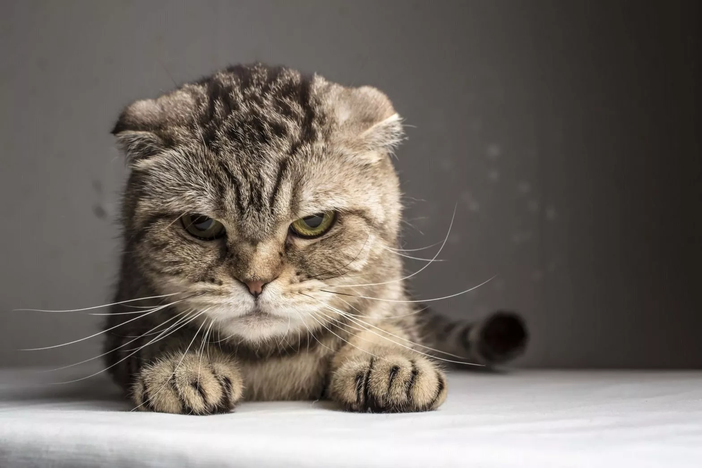

Cat Articles
If you have ever wondered why your cat behaves the way it does, wonder no more

ASK ME ANOTHER
Interview by Kate Wong
As anyone who has spent time with cats knows, our feline companions are mysterious—much more so than those other furry family members. Here John Bradshaw, author of Cat Sense (Basic Books, 2013), fields a selection of questions submitted by Scientific American editors and Twitter followers about the cat’s many quirks. Bradshaw is a visiting fellow at the University of Bristol School of Veterinary Sciences in England, where he studies the behavior and welfare of cats and dogs, as well as their interactions with people.